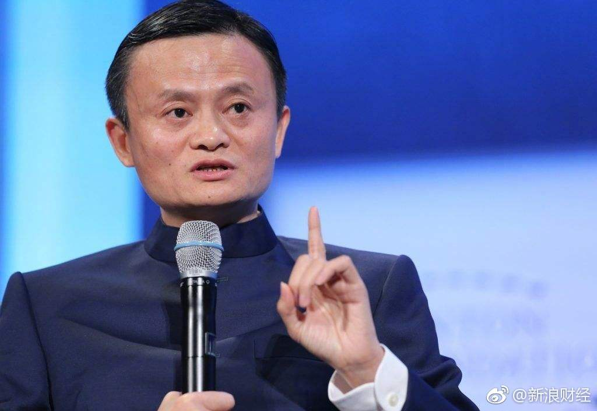
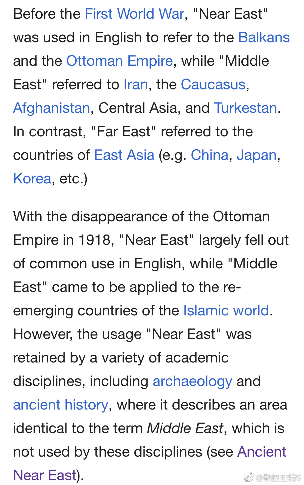

马云是党员这事已经被外媒报道了。帝国主义这是什么阴谋？@新浪财经:【百人名单透露马云鲜为人知的身份】今年是我国改革开放40周年，党中央决定表彰一批为改革开放作出杰出贡献的个人，今天的《人民日报》刊登了100名拟表彰对象的候选名单。这100人涉及各行各业，其中民营企业家是入选的主力群体之一，至少有17位民营企业家代表入选。而在入选的民营企业家中，中国三大BAT巨头的掌门人均在其列。其中，民营企业家入党，马云是中共党员为何这么吸引人关注？百人名单透露马云鲜为人知的身份
关于“中东”和“近东”两个词涵盖的地域范围，维基百科这段说的也太绕了。看意思是说，现代“近东”这个词已经基本不用了，只是在考古学和古代历史领域还使用，基本上就是指“古代近东”，基本上涵盖和现在的“中东”同样的一块地方。“近东”就是历史上的中东，是吗？ 
史上最牛逼的英语简称拼词之一：巴基斯坦。维基百科说，由巴基斯坦独立运动的人于1933年起了国名Pakstan，是五个地区“Punjab, Afghania, Kashmir, Sindh, and Baluchistan”的简称。拼出来这个词在乌尔都语和波斯语里意为圣洁的土地。维基百科说乌尔都语是一种波斯语化的印地语言，现在是巴基斯坦的官方语言之一（另一种是英语）。
 百人名单透露马云鲜为人知的身份
百人名单透露马云鲜为人知的身份